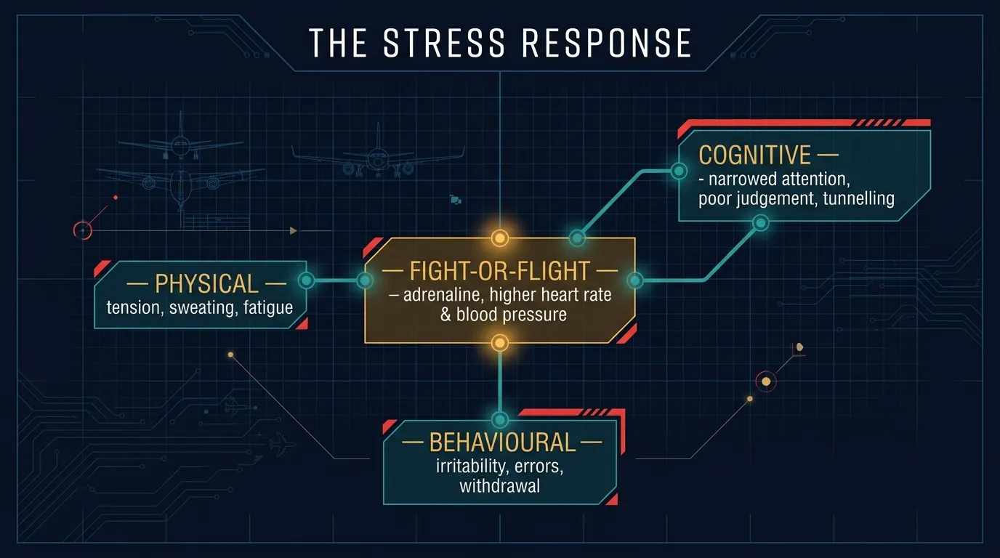
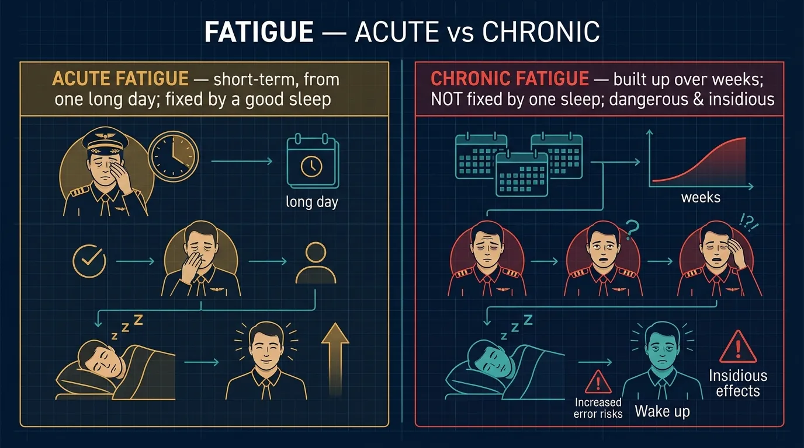
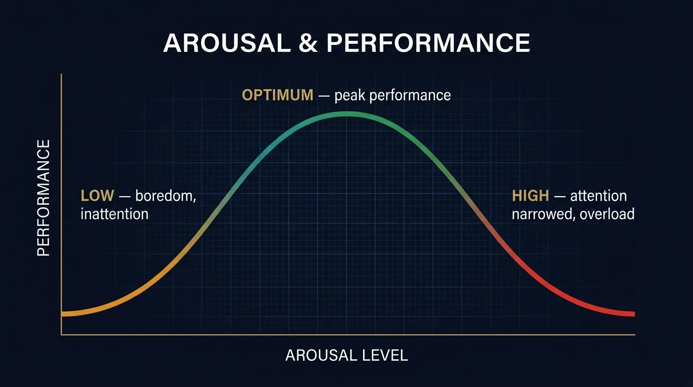

Chapter 23 — The well-being of operational personnel: arousal and performance, the sources and effects of stress, environmental tolerances, managing stress, life-event scoring, and the danger of acute and chronic fatigue.
Three of the many factors which may influence the well-being of operational personnel are:
Other factors affecting physiological or psychological well-being include: temperature, noise, humidity, light, vibration, workstation design and seat comfort.
The different stress levels generated within individuals by a particular stressor will differ. A moderate level of stress may improve performance. Stress promotes an increase in physical strength rather than promoting mental performance.

In an active, outward-going, highly trained person, too little stimulation or stress arousal will lead to the onset of boredom and even drowsiness. An introspective, under-confident person, if highly aroused, might be unable to function at all — even in circumstances that he is competent to deal with.
Stress factors are cumulative. Stress occurs under various conditions:
Temperature, pressure, humidity, noise, time of day, light and darkness can all be reflected in performance and also in well-being. Heights, enclosed spaces, and a boring or stressful working environment can also influence performance.
Recognising stress, accepting it and developing a coping strategy is essential for stress management. Training and experience help to ward off stress and high levels of arousal. Successful completion of a stressful task will reduce the amount of stress experienced when a similar situation arises in the future.
Pilots suffering from life stress should be aware that this can affect their concentration and performance when at the controls of an aircraft. The descending order in which the factors affect a person:
Death of spouse/child → Divorce → Marital separation → Death of a close family member → Injury / illness → Marriage → Loss of job → Retirement → Pregnancy → Sexual problems → Birth → Change of financial status → Siblings leaving home → Change of eating habits → Change of residence → Loan/debt/mortgage → Vacations → Minor violations of law.
| Life Event | Score |
|---|---|
| Death of a spouse or partner | 100 |
| Divorce | 73 |
| Marital separation | 65 |
| Death of a close family member | 63 |
| Personal injury or illness | 53 |
| Loss of job | 47 |
| Retirement | 45 |
| Pregnancy | 40 |
| Sexual problems | 40 |
| Son or daughter leaving home | 29 |
| Change of residence | 20 |
| Bank loan or credit card debt | 17 |
| Vacation | 13 |
| Minor law violation | 11 |
| Cumulative Score | Interpretation |
|---|---|
| < 60 | Free of life stress |
| 60 – 80 | Normal life stress |
| 80 – 100 | High life stress |
| > 100 | Under serious life stress |
Note: such schemes need to be treated with caution because of wide individual variability.
Stress causes: mental blocks, confusion, channelized attention, resignation, frustration, rage, deterioration in motor coordination, high pitch voice and fast speaking.

Tiredness and fatigue, though related concepts, differ in their long-term physical effect on the body. To deal with normal tiredness it is sufficient to ensure that periods of activity and periods of restful sleep comply with the normal pattern for a person's age and physical condition.
Ordinary tiredness results from normal physical and/or mental exertion over a normal waking period. If a person is tired, a good night's sleep is the only requirement for that person to be fit the following morning.
Arousal is a major aspect of many learning theories and is closely related to other concepts such as anxiety, attention, agitation, stress and motivation.
| Arousal Level | Effect |
|---|---|
| Low Arousal | In cruise, attention can wander; information missed or misinterpreted |
| Optimum Arousal | Central Decision Maker at its most efficient. Lower for difficult/cognitive tasks; higher for tasks requiring endurance and persistence |
| High Arousal (Overload) | Real danger of attention becoming narrowed |
